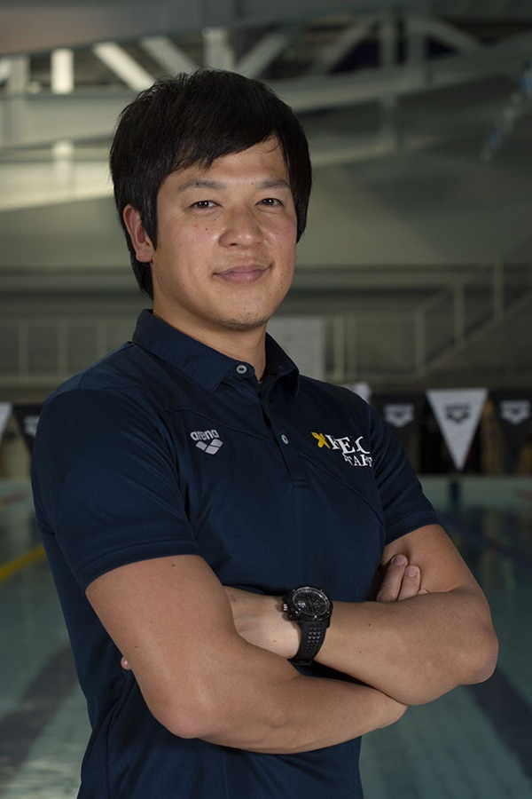

ベストが出た日は、全員が知っている
誰かが自己ベストを更新すると、プールサイドがざわつきます。学年も種目も関係なく騒ぐ。そういうチームです。
TEAM
水泳環境・活動内容
01 / WHY IT WORKS
根性論ではありません。
限られた時間で成果が出るように、環境と指導が設計されているからです。
1本ごとに目的のあるメニュー。短い時間でも狙った刺激が入るよう組まれています。
試験期間・実習は練習を調整できます。学業優先は例外ではなく前提です。
履修状況まで踏まえて、一人ひとりのトレーニングを設計します。
COACHING

ヘッドコーチ
高校までの練習が「与えられたメニューをこなす」ものだったとすれば、 ここでの4年間は「自分の身体と対話しながらメニューを組み立てる」時間です。
動作解析にもとづくフォーム改善、レース局面ごとのラップ設計、 シーズンを通したピーキング。 身体特性と学業スケジュールに合わせて、個別にトレーニングを設計します。
※ コーチ略歴・指導実績は準備中です。
03 / TIMETABLE
「いつ勉強しているのか」が、いちばん想像しづらいところだと思います。
ある部員の1週間をそのまま図にしました。
※ 以下のスケジュールはサイト構成確認用の一例です。 実際の練習日程・時間帯に差し替えてください。
| 時間 | 月 | 火 | 水 | 木 | 金 | 土 | 日 |
|---|---|---|---|---|---|---|---|
| 6:00–8:00 | 朝練 | — | 朝練 | — | 朝練 | 朝練 | 休養 |
| 9:00–12:00 | 講義 | 講義 | 講義 | 講義 | 講義 | 自習 | 自由 |
| 13:00–16:30 | 講義 | 自習 | 講義 | 講義 | 自習 | 自由 | 自由 |
| 17:00–19:30 | 練習 | 練習 | — | 練習 | 練習 | 練習 | 休養 |
| 20:00– | 課題 | 課題 | 課題 | 課題 | 自由 | 自由 | 翌週の準備 |
※ 試験期間・実習期間は練習を調整します。
05 / TEAM LIFE
速さの話ばかりしてきましたが、結局のところ4年間を決めるのは「誰と過ごすか」だと思います。
※ 写真は準備中です。
誰かが自己ベストを更新すると、プールサイドがざわつきます。学年も種目も関係なく騒ぐ。そういうチームです。
一般入試もFIT入試もAO入試も、現役も浪人も。出身地も高校も違う部員が、同じプールに集まっています。
福澤諭吉が説いた「独立自尊」は、自ら考え自ら決めるということ。それは練習メニューへの向き合い方そのものです。